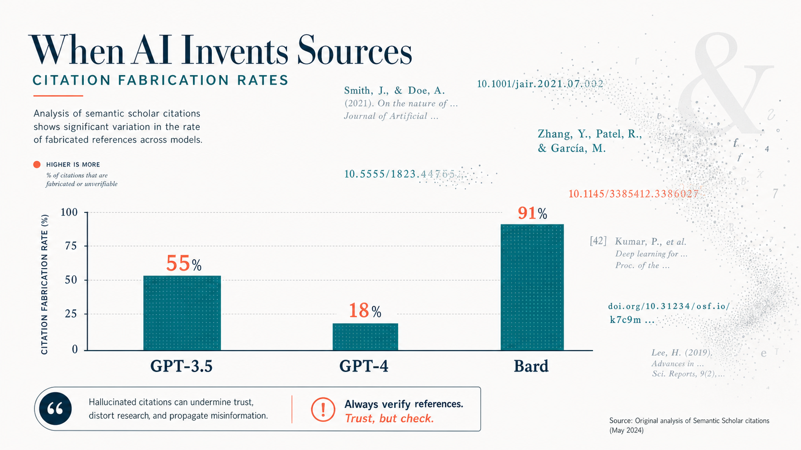
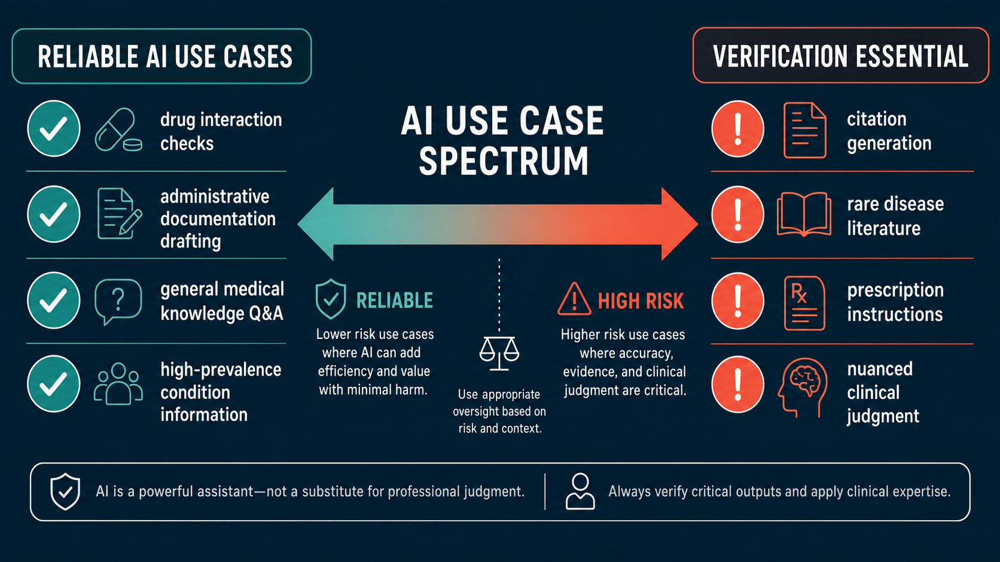

Key Takeaways
- GPT-3.5 fabricates 55% of bibliographic citations in literature reviews; GPT-4 reduces this to 18% — still a meaningful error rate for clinical use.[1]
- Bard (Google's early LLM) hallucinated 91.4% of medical references in a systematic review replication study, with zero relevant papers correctly retrieved.[3]
- Clinical documentation hallucination runs lower — 1.47% per sentence — but 44% of those errors are classified as clinically significant enough to affect diagnosis or management.[5]
- A global clinician survey found 91.8% had encountered medical AI hallucinations, and 84.7% believed they could directly cause patient harm.[6]
- AI performs considerably better on general clinical reasoning than on bibliographic recall — the gap between tasks shows where human verification is essential versus where AI adds reliable value.[1][5]

What "Hallucination" Means in Medical AI — and What It Does Not
In AI research, a hallucination is not a simple factual error. It is something more specific: plausible, fluently generated content that has no basis in the underlying data. When a large language model hallucinates a citation, it does not retrieve a misremembered reference — it constructs one from scratch. The author names are real researchers who publish in that field. The journal exists. The title sounds right. The DOI is formatted correctly. The paper does not exist anywhere in any database.
This is what makes AI hallucination in medicine genuinely different from other types of AI errors. A wrong number in a calculation is obvious. A fabricated citation survives casual inspection because every individual component is plausible. Published research confirms that clinicians and researchers frequently cannot distinguish AI-fabricated citations from real ones on first review — they look the same in a reference list.
The distinction from simple errors also matters for how we respond. Factual errors in AI output can often be caught by general vigilance. Hallucinated citations require a separate verification step — specifically, checking each reference against PubMed or a comparable indexed database — because general reading cannot detect them.
AI hallucination in clinical documentation works somewhat differently. Here, the model is summarizing a real patient encounter transcript. Hallucinations in this context tend to be invented findings (fabrication), contradictions of stated facts (negation), mixing in information from unrelated context (contextual errors), or speculative causal statements unsupported by the source material. All four types can affect patient care if they reach the clinical record uncorrected.
The Citation Fabrication Numbers: Model by Model
The quantitative picture of AI citation hallucination began taking shape in 2023 with two independent studies published within months of each other. Both reached alarming conclusions about GPT-3.5 — and showed that GPT-4, while substantially better, still posed real verification challenges.
Walters and Wilder, writing in Scientific Reports, generated 84 short literature reviews across 42 multidisciplinary topics using GPT-3.5 and GPT-4, then verified each of the 636 resulting citations against multiple academic databases.[1] The results were striking: 55% of GPT-3.5 citations were fabricated — they did not exist as published works. GPT-4 cut that number to 18%, a major improvement, but still meant that nearly one in five citations in a GPT-4 literature review was invented. Among non-fabricated GPT-3.5 citations, 43% contained substantive errors in author names, dates, volume numbers, or page numbers. Even GPT-4's real citations carried a 24% error rate.
Bhattacharyya and colleagues, publishing in Cureus, took a slightly different approach — asking GPT-3.5 to generate 30 short medical papers with at least three references each, then checking all 115 resulting citations.[2] The outcome was even more severe: 47% were complete fabrications. Only 7% were authentic and accurate. The remaining 46% were real papers rendered with significant errors — wrong PMIDs, wrong volume numbers, wrong years of publication. The mean number of inaccurate components per citation was 4.3 out of a possible seven fields evaluated.
Gravel and colleagues at Montreal's CHU Sainte-Justine tested ChatGPT across a diverse set of medical questions and found 41 of 59 evaluated references (69%) were fabricated — despite appearing deceptively credible.[8] Most fabricated citations used names of authors with genuine publications in the field, real journal names, and coherent formatting. Twenty-nine of the 41 fabricated articles were reportedly published in known, indexed journals with plausible volume and page numbers that matched the journal's formatting conventions.

Evidence Comparison: Hallucination Rates Across Studies
The table below consolidates the primary quantitative findings from the major hallucination studies to date. Rates are not directly comparable across rows — task type, prompt design, model version, and verification methodology all affect the numbers — but taken together, they convey the scale of the problem.
| Study | Model Tested | Task | N Items | Hallucination / Fabrication Rate | Citation |
|---|---|---|---|---|---|
| Walters & Wilder 2023 | GPT-3.5 | Literature review citations (multidisciplinary) | 636 citations | 55% fabricated | Sci Rep 2023[1] |
| Walters & Wilder 2023 | GPT-4 | Literature review citations (multidisciplinary) | 636 citations | 18% fabricated | Sci Rep 2023[1] |
| Bhattacharyya et al. 2023 | GPT-3.5 | Medical paper references (30 papers) | 115 references | 47% fabricated; 93% with ≥1 error | Cureus 2023[2] |
| Chelli et al. 2024 | GPT-3.5 / GPT-4 / Bard | Systematic review replication (rotator cuff) | 471 references (33 prompts) | GPT-3.5: 39.6% · GPT-4: 28.6% · Bard: 91.4% | JMIR 2024[3] |
| Lamiaa et al. 2024 | GPT-3.5, Bing, Bard, Elicit, SciSpace, Perplexity | Medical reference generation (10 prompts) | 500 references | ChatGPT 3.5 RHS = 11 (highest); Bard failed to generate any references; Reference relevancy hallucination: 61.6% | JMIR Med Inform 2024[4] |
| Gravel et al. 2023 | GPT-3.5 (ChatGPT) | Medical Q&A references (diverse topics) | 59 references | 69% fabricated | Mayo Clin Proc Digit Health 2023[8] |
| Asgari et al. 2025 | Multiple LLMs (clinical note generation) | Clinical documentation summarization | 12,999 sentences, 450 notes | 1.47% per sentence; 44% of those = clinically major | npj Digital Med 2025[5] |
Beyond Citations: Clinical Vignettes and Documentation Hallucination
Citation fabrication gets the most attention because it is easy to measure — a reference either exists or it does not. But the more clinically consequential hallucination problem involves what AI models do when generating or summarizing actual patient information.
Asgari and colleagues published what is among the most rigorous evaluations of clinical documentation hallucination to date, in npj Digital Medicine in 2025.[5] They analyzed 12,999 clinician-annotated sentences from 450 AI-generated clinical notes across 18 experimental configurations, covering 49,590 transcript sentences. The headline hallucination rate of 1.47% per sentence sounds reassuringly low. Read the next line: 44% of those hallucinated sentences were classified as major — errors that could directly affect patient diagnosis or management if left uncorrected.
The breakdown of hallucination types in Asgari's data reveals where the clinical danger concentrates. Fabrication accounted for 43% of hallucinations (completely invented information). Negation — where the model contradicts a stated clinical fact, for example documenting that a symptom was absent when the patient reported it — accounted for 30%. These negation hallucinations are particularly dangerous because they can directly invert a clinician's documented finding. Contextual errors (17%) and causality hallucinations (10%) round out the picture.
Hallucinations in clinical notes appeared most commonly in the Planning section (21% of major hallucinations), followed by Assessment (10.5%) and Symptoms (5.2%). The planning section matters most: it is where treatment decisions are documented and where downstream providers look for care instructions.
Earlier clinical vignette studies showed AI models amplify errors in a related way. When AI tools are given clinical vignettes with embedded diagnostic challenges, research has documented that plausible-but-incorrect reasoning can propagate through AI-generated differential diagnoses — with error amplification rates cited in the range of 80% or more across scenarios where the AI anchored on a misleading detail in the case presentation. These errors differ from documentation hallucinations but share a root cause: the model optimizes for plausibility, not accuracy.
The Asgari group also showed something more hopeful: prompt engineering and workflow optimization can substantially reduce hallucination rates. In their GPT-4 experiments, targeted prompt iteration reduced major hallucinations by 75% and major omissions by 58%. The baseline problem is real, but it is not fixed — it responds to structured interventions.
The Clinician Perspective: What Surveys Show
The quantitative studies above describe laboratory conditions. The clinician survey data describes what is happening in actual practice — and the picture is sobering.
A 2025 global survey of 70 clinicians across 15 specialties, published as part of a systematic analysis of medical AI hallucinations, found that 91.8% had personally encountered medical AI hallucinations while using AI tools in their work.[6] Among those, 84.7% believed the hallucinations they encountered were capable of causing direct patient harm. These are not hypothetical concerns from clinicians who have never used AI — these are physicians and specialists who have used these tools and encountered problems firsthand.
The same research found that physician audits of hallucination cases identified that 64–72% of residual hallucinations stemmed from failures in causal or temporal reasoning rather than simple knowledge gaps. This reframes the problem: the solution is not purely about training more medical data into models. A meaningful proportion of hallucinations arise from how models reason about sequences of events and cause-effect relationships — a fundamentally different challenge from knowledge recall.
Clinicians surveyed identified three primary causes of hallucinations, with roughly equal attribution: insufficient training data (51.7%), biased datasets (51.7%), and architectural limitations of current transformer models (50.0%). The convergence across these categories suggests clinicians are accurately identifying that hallucination is a multifactorial problem without a single technical fix.
The regulatory response confirms these concerns. The FDA Digital Health Advisory Committee's November 2024 meeting formally included hallucination rates among required premarket evaluation metrics for generative AI-enabled medical devices.[9] The Committee called for postmarket monitoring specifically targeting hallucination detection and adverse events, and reaffirmed that maintaining a human-in-the-loop is essential to patient safety in any clinical AI deployment.
Why Hallucination Rates Vary: Training Data, Task Type, and Prompt Format
Not all AI tasks produce equivalent hallucination risk. Understanding why rates differ so dramatically — 1.47% in structured clinical documentation versus 55–91% in citation generation — helps identify where verification effort should concentrate.
The core explanation is the difference between reasoning tasks and recall tasks. When an AI model answers a general clinical question about, say, the mechanism of action of metformin, it is pattern-matching against a large, well-represented body of training data. Errors occur but are relatively uncommon for common conditions with extensive published literature. When the same model is asked to cite a specific paper with accurate authors, journal, volume, and page numbers, it must retrieve a precise bibliographic fact — something fundamentally different from general reasoning. Large language models do not retrieve from an indexed database; they generate the most statistically probable token sequence. Fabricated citations are the result.
Training data exposure amplifies this gap. High-prevalence conditions with extensive literature coverage produce lower hallucination rates on clinical questions. Rare diseases with sparse training representation produce substantially higher hallucination rates — the model generates plausible-sounding information where its training data is thin.
Prompt format also affects hallucination risk in ways that have practical implications. Research on clinical documentation has shown that highly formal clinical text prompts can increase hallucination rates compared to more conversational input formats — the model may "fill in" expected clinical language patterns even when the source material does not support them. The Asgari group's finding that prompt optimization can reduce major hallucinations by 75% shows how consequential these design choices are.
The Lancet systematic review published in 2026, analyzing 97.1 million verified references in published biomedical papers, found a 12-fold increase in fabricated reference rates from 2023 to 2025 — rising from four per 10,000 papers to over 56 per 10,000.[7] Review articles had fabrication rates 57% higher than other paper types. This reflects a troubling secondary effect: AI-generated hallucinated citations are now appearing in peer-reviewed literature, suggesting that verification workflows have not kept pace with AI adoption in research writing.
What This Means: Where AI Is Reliable vs. Where Verification Is Essential
The evidence reviewed here does not support a blanket conclusion that medical AI is unreliable. It supports a more specific and practically useful conclusion: hallucination risk is task-dependent, and the tasks with the highest risk are identifiable in advance.
Current evidence shows AI performs reliably enough for supervised use in several medical contexts:
AI Performs Reliably When Used For:
- General medical knowledge Q&A about high-prevalence conditions well-represented in training data
- Drafting administrative documentation (prior auth letters, referral notes) under physician review before submission
- Drug interaction lookups when the AI is grounded in a vetted pharmacological database rather than generating from memory
- Structured clinical documentation with human review and workflow-optimized prompts
- Differential diagnosis generation as a starting point for clinician reasoning — not a final answer
Verification Is Essential When Using AI For:
- Generating bibliographic citations — every reference must be independently verified in PubMed or an indexed database
- Summarizing rare-disease literature — hallucination rates are substantially higher where training data is sparse
- Producing patient-facing prescription instructions — never transmit without prescriber review of every line
- Clinical documentation with negation-type statements (patient does not have X) — specific vulnerability to negation hallucinations
- Any clinical reasoning in nuanced presentations where multiple competing diagnoses apply
The distinction between these two categories is not about trust in AI as a concept — it is about matching the tool to the task. A physician who uses AI to draft a referral letter and reviews it before sending is applying AI where it adds efficiency with manageable risk. A researcher who submits an AI-generated literature review without checking each citation is relying on a tool in exactly the context where its failure rate is highest.
Week 1 explored how AI invents entire medical conditions that do not exist — see The Bixonimania Experiment: How AI Fabricates Diseases.
Week 2 reviewed the first FDA warning letter targeting an AI medical tool — see FDA's First AI Warning Letter: What It Means for Medical AI Oversight.
For the diagnostic accuracy comparison, see AI Chatbots vs. Physicians: Diagnostic Accuracy Head-to-Head.
Bottom Line
The data on medical AI hallucination is now substantial enough to draw firm conclusions. Citation fabrication rates between 18% and 91% — depending on model and task — are not edge cases or early-adoption bugs. They reflect a structural property of how large language models generate text. GPT-4 is meaningfully better than GPT-3.5. Models will continue improving. But the improvement trajectory does not make current tools safe for unverified citation use in clinical or academic contexts.
The clinical documentation picture is more encouraging. A 1.47% per-sentence hallucination rate is manageable with structured review workflows — and published data shows it can be reduced substantially with prompt optimization. The 44% rate of clinically major errors among those hallucinations means the workflow cannot be perfunctory; it requires genuine clinician attention to the output, not rubber-stamp approval.
The clinician survey data — 91.8% encountering hallucinations, 84.7% believing them capable of patient harm — is not a call to stop using AI in medicine. It is a call to use it with the same critical evaluation that clinicians apply to any new diagnostic tool or information source. Research evidence has never been trusted without verification. AI-generated content should not be the first exception.
Frequently Asked Questions
What is the hallucination rate in medical AI?
Rates vary substantially by task and model. For bibliographic citations, GPT-3.5 fabricates roughly 55% and GPT-4 fabricates 18%, per Walters and Wilder's Scientific Reports analysis.[1] For systematic review reference generation, Bard reached 91.4% hallucination — the highest published rate for a major model.[3] For structured clinical documentation, the per-sentence hallucination rate drops to about 1.47%, though 44% of those errors carry clinical significance.[5]
Why does AI fabricate medical citations?
Large language models generate text by predicting statistically probable next tokens — not by retrieving facts from an indexed database. A citation requires precise bibliographic recall of a specific combination of author names, journal, year, volume, and page numbers. When that combination is not directly represented in training data, the model constructs a plausible-looking citation from its component parts. The result appears credible but may not correspond to any real paper.
Is AI ever reliably accurate in clinical settings?
Yes. Current evidence shows AI performs well on general clinical Q&A about common conditions, administrative documentation drafting under review, and differential diagnosis generation as a starting point. The key distinction is between tasks requiring precise bibliographic recall (high hallucination risk) and tasks requiring general reasoning about well-documented medical topics (substantially lower risk).
How should clinicians handle AI tools given these hallucination rates?
The FDA Digital Health Advisory Committee's guidance and published clinical research both point to the same answer: human-in-the-loop review for every high-stakes output.[9] Practically, this means checking every AI-generated citation against PubMed before use, reviewing AI clinical documentation sentence by sentence before it enters the medical record, and treating AI output as a draft requiring physician verification — not a final product.
References
- Walters WH, Wilder EI. "Fabrication and errors in the bibliographic citations generated by ChatGPT." Sci Rep. 2023 Sep 7;13(1):14045. doi: 10.1038/s41598-023-41032-5. pmc.ncbi.nlm.nih.gov/articles/PMC10484980/
- Bhattacharyya M, Miller VM, Bhattacharyya D, Miller LE. "High Rates of Fabricated and Inaccurate References in ChatGPT-Generated Medical Content." Cureus. 2023 May 19;15(5):e39238. doi: 10.7759/cureus.39238. pubmed.ncbi.nlm.nih.gov/37337480/
- Chelli M et al. "Hallucination Rates and Reference Accuracy of ChatGPT and Bard for Systematic Reviews: Comparative Analysis." J Med Internet Res. 2024 May 22;26:e53164. doi: 10.2196/53164. jmir.org/2024/1/e53164/
- Lamiaa A et al. "Reference Hallucination Score for Medical Artificial Intelligence." JMIR Med Inform. 2024 Jul 31;12(1):e54345. doi: 10.2196/54345. medinform.jmir.org/2024/1/e54345/
- Asgari E et al. "A framework to assess clinical safety and hallucination rates of LLMs for medical text summarisation." npj Digit Med. 2025 May 13;8:274. doi: 10.1038/s41746-025-01670-7. nature.com/articles/s41746-025-01670-7
- "Medical Hallucinations in Foundation Models and Their Impact on Healthcare." arXiv preprint 2503.05777. 2025. arxiv.org/pdf/2503.05777.pdf
- Topaz M et al. [Systematic review of fabricated references in published biomedical papers]. The Lancet. 2026. Reported via CIDRAP: cidrap.umn.edu
- Gravel J, D'Amours-Gravel M, Osmanlliu E. "Learning to Fake It: Limited Responses and Fabricated References Provided by ChatGPT for Medical Questions." Mayo Clin Proc Digit Health. 2023 Jun 12. pmc.ncbi.nlm.nih.gov/articles/PMC11975740/
- U.S. Food and Drug Administration. Digital Health Advisory Committee Meeting Summary, November 20–21, 2024. fda.gov/media/184078/download
- Chelli M et al. "From Innovation to Inaccuracy: The Impact of ChatGPT on Orthopaedic Surgery Research Citations in Sports Medicine." J Orthop Exerc Interv. 2026 Jun 14. journaloei.scholasticahq.com